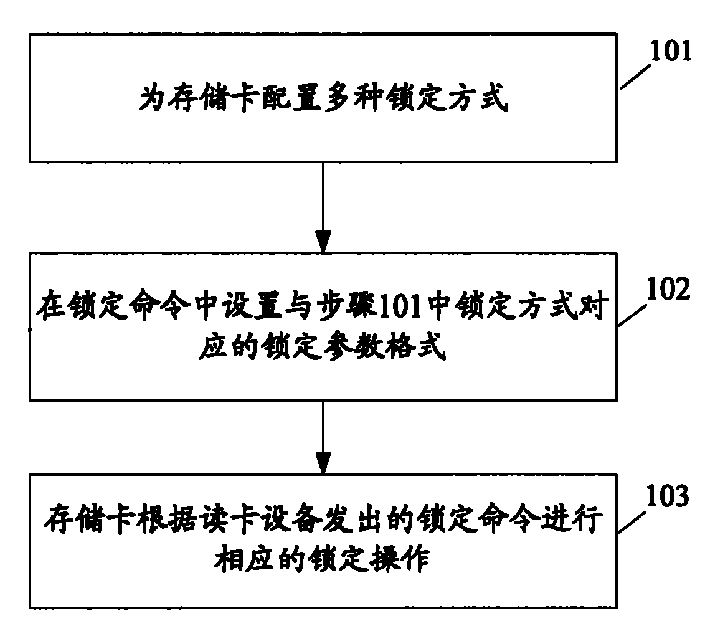

发明名称--一种锁定存储卡的方法
| 申请号 | CN200610167892.X | 申请日 | 2006.12.20 | ||
| 公开（公告）号 | CN101206711A | 公开（公告）日 | 2008.06.25 | ||
| IPC分类号 | G06K7/00 | 申请（专利权）人 | 普天信息技术研究院; | ||
| 发明人 | 曹会扬; | 优先权号 |
摘要:
本发明公开了一种锁定存储卡的方法，首先为存储卡配置多种锁定方式，并在锁定命令中设置与锁定方式对应的锁定参数格式。读卡设备在锁定命令中依据预先设置的锁定参数格式，具体填写锁定参数，以对应具体锁定方式。然后，存储卡在判断出接收到的锁定命令中携带的密码合法后，根据锁定命令中携带的锁定参数确定具体的锁定方式，进行相应的锁定。这样，就可以实现对存储卡进行多功能的锁定。更进一步地，在读卡设备中设定多个密码规则组，以便于对不同用户的密码规则管理，从而实现对存储卡多用户的锁定。
摘要附图:
